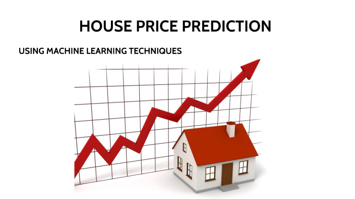

In real estate, fair and consistent pricing is crucial for buyers, sellers, banks, and policymakers.
In this project I used linear regression algorithm to predict houses prices based on multiple features,
which can help homeowners decide when to sell, buyers understand affordability, banks assess mortgage risks, and investors evaluate opportunities.

This project presents an excellent opportunity to demonstrate my ability to apply the K-Means clustering model to effectively segment
a retail company's customers into meaningful and actionable groups.
Based on the clustering results, I developed targeted recommendations to help stakeholders optimize their marketing strategies and improve customer engagement.

In this project, I utilized the TextBlob and Vader sentiment analysers to perform sentiment classification
on movie reviews and evaluated their performance in comparison to random guessing.

Receiving spams whether through emails, messages or modern channels is a huge challenge for individuals and organizations.
This project was an opportunity for me to implement the
random forest classifier to effectively classify emails into spams or not spams.

In this project, I developed an NLP model (the DeBERTa v3 base model) to predict students'potential math misconceptions based on their explanations of open-ended responses.
This will help teachers to identify easily and address students'incorrect thinking and certainly improve their math learning.

The use of renewable energy has increased over the years, driven by factors such as
political policies, environmental concerns, public health considerations,
and economic incentives. In this project, I analyzed energy consumption patterns
and developed forecasts for future usage using SARIMA model.
In this project, I developed a program that recommends the top 10 highest-rated movies. This is essential
for enhancing user experience and driving greater profitability for companies.

This project was an opportunity for me to create an application that predicts the weather condition
with just using zip code or city, using the free open weather map platform.

In this project, I implemented an automated process to extract cryptocurrency market data using an API.
In this project I used MySQL to clean and explore global employees layoffs from COVID-19 to 2025.
This holds all my Reports and Dashboards.